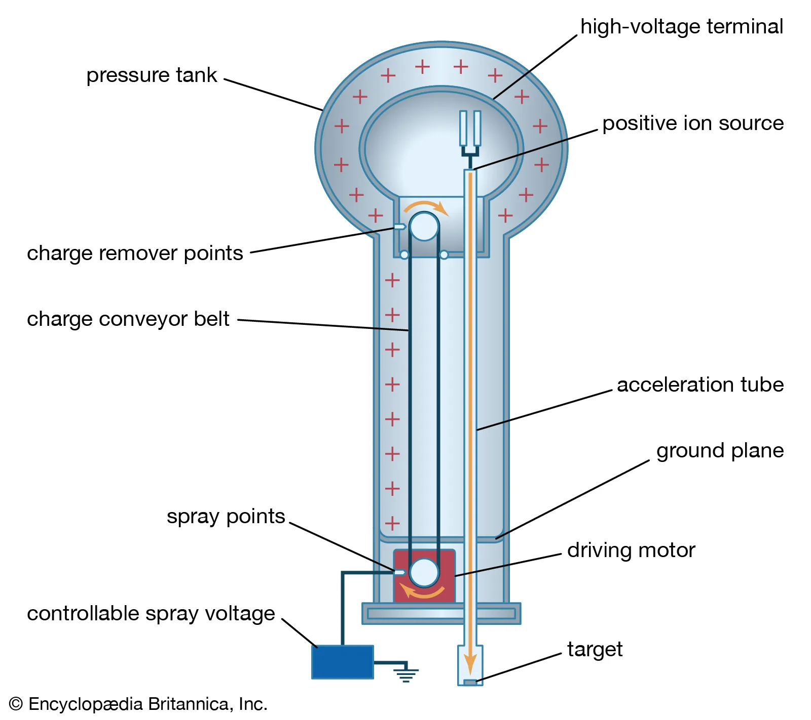

Current Progress
Current Progress
- Construction of the liquid high-voltage divider (in progress)
- Initial testing of the Van de Graaff generator
- Research into high-temperature CO₂ dissociation mechanisms
- Review of past NAU Car Filter capstone documentation
- Drafting of Phase II reaction chamber design
- Development of safety and standards compliance plan
 Immediate & Near-Term Action Plan
Immediate & Near-Term Action Plan
The near-term work focuses on validating the high-voltage stack and preparing the lab for safe, controlled CO₂ experimentation.
1. Validate
Confirm accurate measurement of VDG output voltage and stability using the liquid high-voltage divider.
2. Assess
Determine whether supplemental pulsed or high-current power sources are needed to reach target energy densities.
3. Design
Finalize the modular, heatable, sealed reaction chamber for high-temperature CO₂ testing.
4. Build
Construct and commission the chamber during the Fall–Spring term and prepare for controlled-environment testing.

Once the chamber is built and commissioned, the team will begin controlled experiments examining:
- Temperature-assisted dissociation at elevated gas temperatures
- Pressure effects on breakdown behavior and plasma stability
- Electric field enhancement via electrode geometry and spacing
- Electrode configuration and material impacts
- Limited-scope wavelength-assisted excitation as time permits
- Low current output from the VDG, limiting energy throughput
- Achieving and maintaining stable plasma in CO₂ at useful conditions
- Preventing rapid recombination of dissociated species after discharge
- Accurate calibration of high-voltage measurement systems
- Thermal management and material limits within the reaction chamber
These challenges shape expectations and guide realistic engineering decisions about the future of any CO₂ dissociation technology.